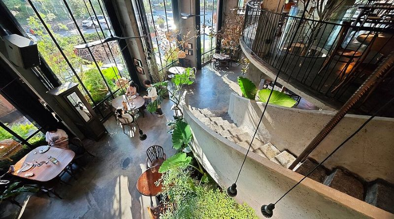
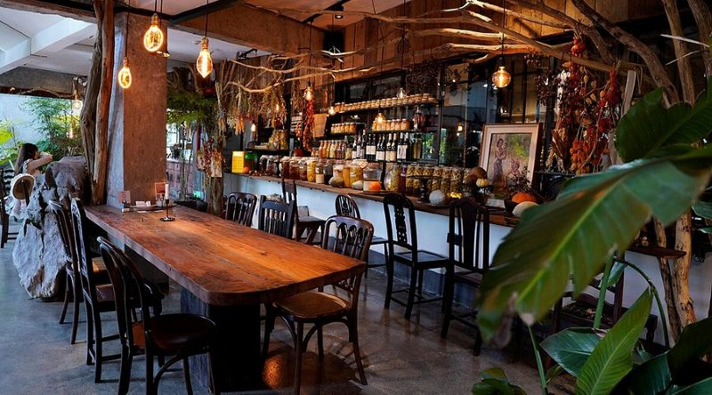
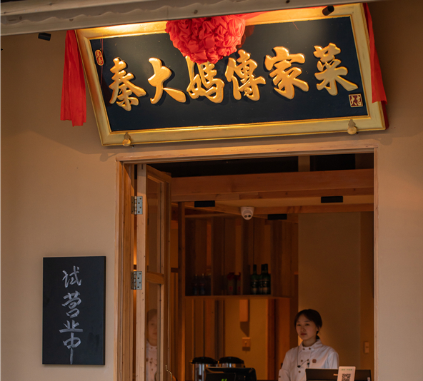
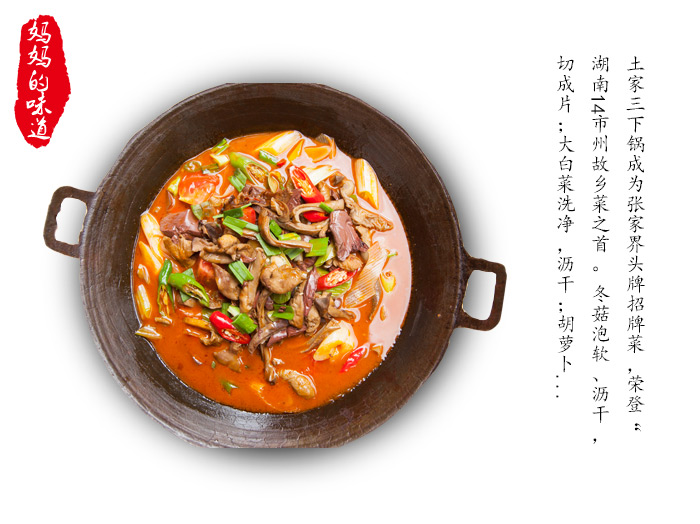
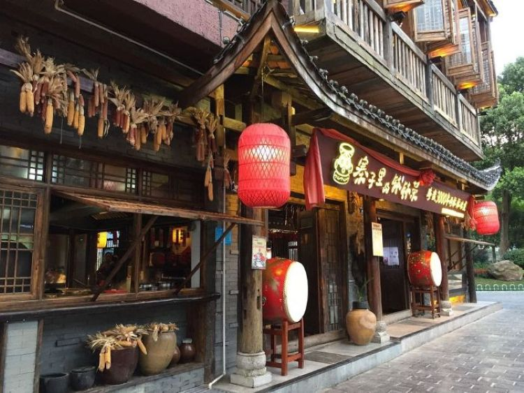
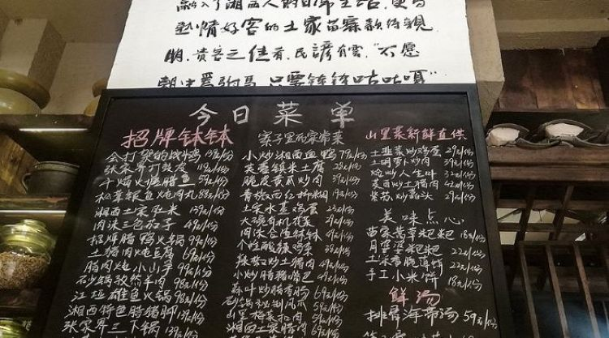

Price: $20-30 (150-200yuan)
Located on the riverside in a detached red-brick villa spanning 2,000 square meters, this restaurant is like a tranquil oasis. High loft ceilings, an outdoor garden, vintage wood furniture, and lush greenery create a serene "indoor forest" atmosphere. The restaurant specializes in European cuisine (steak, seafood, pasta, salads, and freshly baked bread) and offers gluten-free/vegan options. In addition, the restaurant offers a selection of wines, coffee, fresh juices, and craft beers. If you're abroad and missing home or looking for a relaxing getaway, this restaurant is a great choice.
 Price: $10-20 (70-140yuan)
Qin Dama Restaurant is an upgraded restaurant located near the Huatian Hotel in Yongding District, Zhangjiajie City. It was formerly Qin Dama's food stall. The restaurant's decor is warm and comfortable, aiming to provide customers with a relaxed dining experience like being at home. Qin Dama mainly offers local Hunan cuisine, which tends to be spicy. If you want to try authentic Hunan dishes, this restaurant is perfect for you.
 Price: $10-20 (70-140yuan)
This is a Hunan cuisine restaurant located on Wulingyuan Pedestrian Street, quite close to Zhangjiajie National Scenic Area. They offer a wide variety of dishes, and the flavors are very authentic. If you want to try authentic local flavors and generous portions, this restaurant is a must-visit.
 